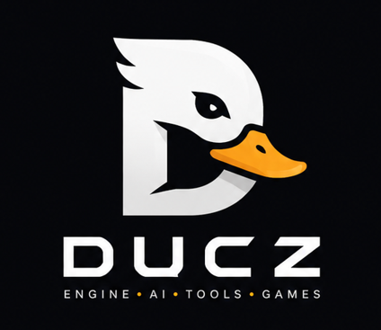
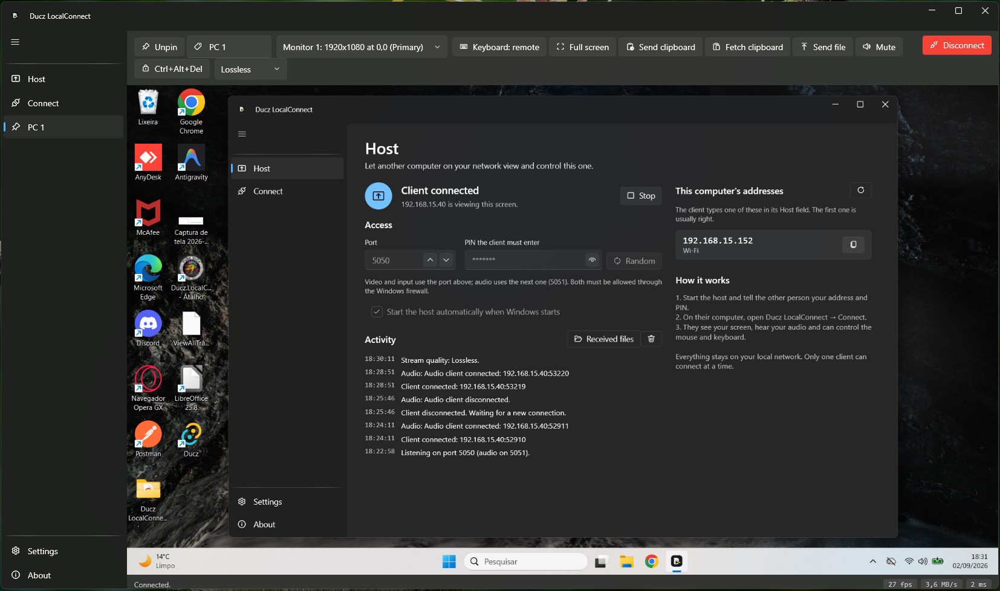
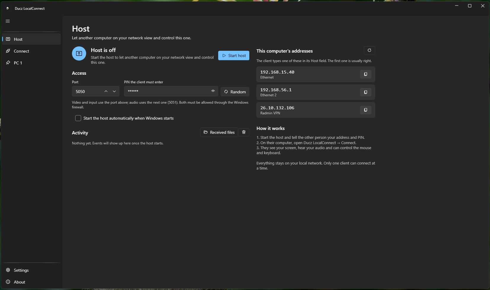
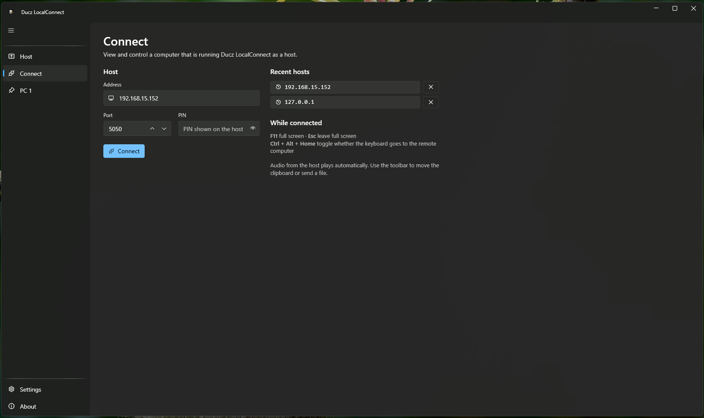

Control another Windows PC on the same network - screen, audio, mouse, keyboard, clipboard and files. No account, no cloud, no relay servers. Everything stays on your LAN.

A fast, private alternative to cloud remote-desktop tools - for the machines already on your desk.
Low-latency screen streaming with differential frames, plus the host's system audio on its own channel.
Remote mouse and keyboard. In full screen, even the Windows key, Alt+Tab and Ctrl+Alt+Del go to the remote PC.
Send text both ways and drop files onto the host - no third-party service in between.
Connect to several computers at once. The one you're watching streams; the rest pause and resume instantly.
Pin a computer to the sidebar for one-click reconnect. Pin by name and it survives an IP change.
Sharp keeps text pixel-perfect on a wired LAN; Balanced suits Wi-Fi. Switch on the fly.
A PIN gates every session, one client at a time. Nothing is exposed to the internet.
Optionally launch at login and start hosting automatically, tucked away in the notification area.
A clean Windows 11-style interface with light and dark themes, Mica, and a native tray icon.
One PC shares its screen; another connects with an address and a PIN.


Install it on both computers - no .NET runtime needed.
5050.Trusted-LAN tool: traffic is not encrypted and stays on your network - don't expose the ports to the internet.